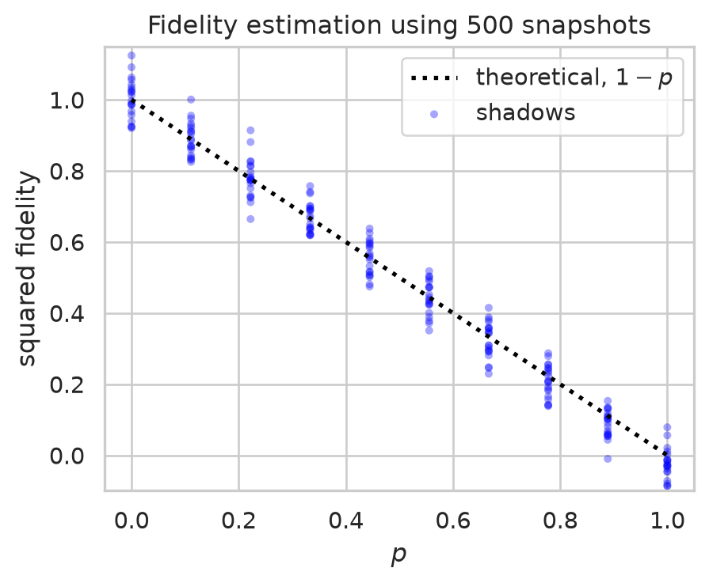

import pennylane as qml
from pennylane import numpy as np
from qiskit.quantum_info import random_clifford, Operator
SEED = 1234
z_rng, cliff_rng = np.random.default_rng(SEED), np.random.default_rng(SEED + 1)Classical Shadows with PennyLane
This document is a pedagogical introduction to Classical Shadows, introduced in Predicting Many Properties of a Quantum System from Very Few Measurements by Huang, Kueng & Preskill. In particular, this document replicates the results of the first numerical example provided by the article on Quantum Fidelity Estimation. The first part contains a step-by-step realization of the protocol built with PennyLane, while the second part plots the results across a wider parameter spectrum using a more efficient (although less intuitive) implementation.
Introduction
Classical shadows are a tool to efficiently extract the expectation value of several observables from a quantum state. The number of required quantum measurements of the state of interest scales as: \[ N_{\text {quantum meas}} = \mathcal{O}\left( \frac{\log(M)}{\epsilon^2} \max_{i} \Vert{} O_i \Vert{}_{\text{shadow}}^2 \right) \]
where
- \(M\) is the number of observables whose expectation value you want to estimate
- \(\epsilon\) is the estimation error
- \(\max_{i} \Vert{} O_i \Vert{}_{\text{shadow}}^2\) is a factor whose explicit form depends on target observables \(O_i\) and measurement procedure.
Procedure
The procedure involves four steps, two on the quantum device and two on a classical post-processing computer. As a preliminary step, it is necessary to choose an ensemble of unitaries:
- Clifford unitaries acting on all qubits
- Tensor products of single qubit Clifford unitaries
The latter is preferable for estimating local observables while the former is better suited for global ones although at a greater cost in terms of number of gates.
Quantum device
Suppose you can repeatedly prepare the target quantum state \(\rho\), which we take as our starting point. For each iteration
- Apply a random unitary \(U_i\) from the chosen ensemble
- Measure all qubits in the \(Z\) basis and store the resulting bitstring \(\hat{b}_i\)
This generates a set of pairs \((U_i, \hat{b}_i)\)
Classical computer
For each pair
Apply \(U^\dagger\) to \(\hat b_i\) (this is equivalent to generating a quantum state \(\ket {\hat{b}_i}\) by applying an \(X\) gate to each qubit that was measured at 1, and then applying \(U^\dagger\) to it). This results in \(\left( U^\dagger_i \ket{\hat{b}_i} \bra{\hat{b}_i} U_i \right)\)
Apply an ensemble-dependent formula to the result to obtain a classical snapshot \(\hat{\rho}_i\). For Clifford unitaries acting on all qubits, this is \((2^n + 1) \left( U^\dagger_i \ket{\hat{b}_i} \bra{\hat{b}_i} U_i \right) - I\)
You can then use this set of classical snapshots \(\{\hat{\rho}_i\}\) to estimate the expectation value of different observables. Let’s now implement the first example from the paper.
Example: estimating the fidelity of an approximate GHZ state
We want to estimate the fidelity of an approximate GHZ state \(\rho_p\) with respect to its pure counterpart \(\ket{\psi^+_{\text{GHZ}}}\) using Clifford unitaries acting on all qubits as our ensemble. The approximate GHZ state depends on a noise parameter \(p \in [0,1]\) according to the formula:
\[ \rho_p = (1-p) \ket{\psi^+_{\text{GHZ}}} \bra{\psi^+_{\text{GHZ}}} + p \ket{\psi^-_{\text{GHZ}}} \bra{\psi^-_{\text{GHZ}}} \] where \[ \ket{\psi^\pm_{\text{GHZ}}} = \frac{\ket{0}^{\otimes n} \pm \ket{1}^{\otimes n}}{\sqrt{2}} \]
Note
\(\ket{\psi^+_{\text{GHZ}}}\) is the pure GHZ state: \(\ket{\psi^+_{\text{GHZ}}} = \ket{\psi_{\text{GHZ}}}\)
The resulting (squared) fidelity can be calculated analytically as: \[ \begin{align} F^2(\ket{\psi_{\text{GHZ}}}, \rho_p) &= \bra{\psi_{\text{GHZ}}} \rho_p \ket{\psi_{\text{GHZ}}} \\ &= (1-p) \bra{\psi_{\text{GHZ}}} \ket{\psi^+_{\text{GHZ}}} \bra{\psi^+_{\text{GHZ}}} \ket{\psi_{\text{GHZ}}}+ p \bra{\psi_{\text{GHZ}}} \ket{\psi^-_{\text{GHZ}}} \bra{\psi^-_{\text{GHZ}}} \ket{\psi_{\text{GHZ}}} \\ &= (1-p) \end{align} \]
The observable that gives us the squared fidelity is: \[O = \ket{\psi^+_{\text{GHZ}}} \bra{\psi^+_{\text{GHZ}}} \]
Let’s implement the protocol step by step. We begin by importing the necessary libraries and setting the random seeds.
We now implement the quantum device part. We first define a quantum_circuit() that applies a unitary \(U\) to the approximate GHZ state. Note that \(\rho_p\) is created from an external random parameter z_error as we want all our PennyLane circuits to be pure functions. A non-pure-function alternative would sample the random parameter inside the circuit.
p = 0.7 #noise parameter for the approximate GHZ state
n_qubits = 5
n_snapshots = 1000
z_errors = z_rng.random(n_snapshots) < p
dev_quant = qml.device("default.qubit", wires=n_qubits, seed=SEED + 2)
@qml.set_shots(1)
@qml.qnode(dev_quant)
def quantum_circuit(U, z_error):
# Generate approximate GHZ state
qml.H(wires=0)
for i in range(1, n_qubits):
qml.CNOT(wires=[0,i])
if z_error:
qml.Z(0)
# Apply unitary U
qml.QubitUnitary(U, wires=range(n_qubits))
return qml.sample()We now need to sample \(U_i\) uniformly from the ensemble. To do this, we use the random_clifford function from qiskit. Notice in the cell below how the Clifford operator is stored in memory. If we were to store the entire matrix we would need \(2^n \times 2^n\) complex numbers, but by making use of some mathematical properties we can reduce it to \(4n^2 + 2n\) bits.
Note
Here is an intuitive explanation of why this is true: Since the \(n\)-qubit Clifford group is the normalizer of the Pauli group \(\mathcal{P}_n\) within the Unitary group, it maps Pauli strings to other Pauli strings through an operation called conjugation. Take an operator \(U\) from the Clifford group and two Pauli strings \(P_i\) and \(P_j\).
\[ U P_i U^\dagger = \pm P_j \]
We can use this property to uniquely define \(U\) by keeping track of which Pauli string each of the \(2n\) generators of the Pauli group is mapped to. Since storing a Pauli string and its sign requires \(2n + 1\) bits, we need \(2n(2n +1)\) bits in total. The generators of the \(n\)-qubit Pauli group are \(\{Z_0, Z_1, ..., Z_{n-1}\}\) and \(\{X_0, X_1, ..., X_{n-1}\}\). In the cell below we can see which Pauli strings Qiskit maps Z and X generators to.
cliff = random_clifford(num_qubits=n_qubits, seed=0)
cliff.to_dict(){'stabilizer': ['-IYIII', '+YYZYZ', '+XIXII', '-XYXXY', '-XIXZX'],
'destabilizer': ['+IXIIX', '+YIYII', '+YIIXX', '+ZIZZI', '+ZYZIY']}We then proceed to populate two arrays with the \(\{U_i\}\) and \(\{\hat{b}_i\}\).
cliff_array = []
b_array = []
for i in range(n_snapshots):
cliff = random_clifford(num_qubits=n_qubits, seed=cliff_rng)
U = Operator(cliff).reverse_qargs().data
b = quantum_circuit(U, z_errors[i])[0]
cliff_array.append(cliff)
b_array.append(b)A snapshot is defined as: \[ \hat{\rho}_i = \mathcal{M}^{-1} \left( U^\dagger_i \ket{\hat{b}_i} \bra{\hat{b}_i} U_i \right) = (2^n+1) \ U_i^\dagger \ket{\hat{b}_i} \bra{\hat{b}_i} U_i - I \]
Squared fidelity is obtained through:
\[ \begin{align} (\text{Fidelity}^2)_i = \text{Tr} (\hat{\rho}_i O) &= (2^n+1) \ \text{Tr}(U_i^\dagger \ket{\hat{b}_i} \bra{\hat{b}_i} U_i O) - \text{Tr}(O) \\ &= (2^n+1) \bra{\hat{b}_i} U_i O U_i^\dagger \ket{\hat{b}_i} - \text{Tr}(O) \\ &= (2^n+1) \ |\bra{\hat{b}_i} U_i \ket{\psi_\text{GHZ}^+}|^2 \ - 1 \end{align} \]
dev_class = qml.device("default.qubit", wires=n_qubits)
@qml.qnode(dev_class)
def get_sqfidelity(cliff, b):
n_qubits = len(dev_class.wires)
# Create ket |b> from bitstrings b
for i in range(n_qubits):
if b[i] == 1:
qml.X(i)
# Apply inverse cliff
U = Operator(cliff).reverse_qargs().data
qml.adjoint(qml.QubitUnitary(U, wires=range(n_qubits)))
# Measure the expectation value of the projection with |psi_ghz>
# Undo GHZ and project on |00000>
for i in range(1, n_qubits):
qml.CNOT(wires=[0,i])
qml.H(wires=0)
# Return squared fidelity expectation value
return qml.expval(qml.Projector([0] * n_qubits, wires=range(n_qubits)))
raw_res = np.array([get_sqfidelity(cliff_array[i], b_array[i]) for i in range(n_snapshots)])
sqfidelity = ((2**n_qubits + 1) * raw_res - 1).mean()
print('Theoretical squared fidelity:', 1-p)
print('Classical shadows squared fidelity:', sqfidelity)Theoretical squared fidelity: 0.30000000000000004
Classical shadows squared fidelity: 0.30659374999999794Plot
Below we simulate and plot 20 experiments, each featuring 500 snapshots, across 10 equally spaced values for \(p\) ranging from 0 to 1.
This function is more efficient than the previous one because it is based on the following considerations.
In order to obtain the squared fidelity we need \(|\bra{\hat{b}_i} U_i \ket{\psi_\text{GHZ}^+}|^2\) \[ (\text{Fidelity}^2)_i = (2^n+1) \ |\bra{\hat{b}_i} U_i \ket{\psi_\text{GHZ}^+}|^2 \ - 1 \]
This can be obtained by looking at the output probabilities \(P_b\) of the quantum circuit, which we can calculate exactly all at once through vector state evolution. \[ U \ket \psi = \sum_b a_b \ket{b} \implies |\bra{b} U \ket{\psi_\text{GHZ}^+}|^2 = |a_b|^2 = P_b \]
We then sample the output bitstring \(\hat{b}_i\) according to the output probability distribution of \(U\ket{\psi^+_{\text{GHZ}}}\) and \(U\ket{\psi^-_{\text{GHZ}}}\).
Show code
import matplotlib.pyplot as plt
import seaborn as sns
def ghz_experiments(p_values, n_exp, n_snap, plot_rng):
@qml.qnode(dev_class)
def quantum_circuit(U, z_error):
qml.H(wires=0)
for i in range(1, n_qubits):
qml.CNOT(wires=[0, i])
if z_error:
qml.Z(0)
qml.QubitUnitary(U, wires=range(n_qubits))
return qml.probs(wires=range(n_qubits))
sqfidelity = np.empty((n_exp, len(p_values)))
for e in range(n_exp):
# draw the Cliffords and reuse them for every p
cliffs = [random_clifford(num_qubits=n_qubits, seed=plot_rng) for _ in range(n_snap)]
U = np.stack([Operator(cliff).reverse_qargs().data for cliff in cliffs])
probs_plus = quantum_circuit(U, False) # shape (n_snap, 2^nqubits)
probs_minus = quantum_circuit(U, True)
# sample bitstring distributions from the quantum device
idx_plus = np.array([plot_rng.choice(2**n_qubits, p=probs_plus[i]) for i in range(n_snap)])
idx_minus = np.array([plot_rng.choice(2**n_qubits, p=probs_minus[i]) for i in range(n_snap)])
x_plus = probs_plus[np.arange(n_snap), idx_plus]
# the target is always |psi+>, so use probs_plus even for the minus branch
x_minus = probs_plus[np.arange(n_snap), idx_minus]
# apply inverted quantum channel to measured bitstrings
u = plot_rng.random(n_snap)
for j, p_j in enumerate(p_values):
x = np.where(u < p_j, x_minus, x_plus) # randomly chooses between GHZ+ and GHZ-
sqfidelity[e, j] = (2**n_qubits + 1) * x.mean() - 1
sns.set_theme(style='whitegrid', context='notebook', palette='deep')
fig, ax = plt.subplots(figsize=(5, 3.8))
ax.set_title(f"Fidelity estimation using {n_snap} snapshots")
ax.plot(p_values, 1 - p_values, ':', color="black", lw=2, label='theoretical, $1-p$')
sns.scatterplot(x=np.tile(p_values, n_exp), y=sqfidelity.ravel(), ax=ax,
color="blue", alpha=0.35, s=14, edgecolor='none',
label='shadows') # the 20 experiments
ax.set(xlabel='$p$', ylabel='squared fidelity', ylim=(-0.1, 1.15))
ax.legend()
plt.show()
ghz_experiments(p_values=np.linspace(0, 1, 10), n_exp=20, n_snap=500, plot_rng=np.random.default_rng(SEED + 3))